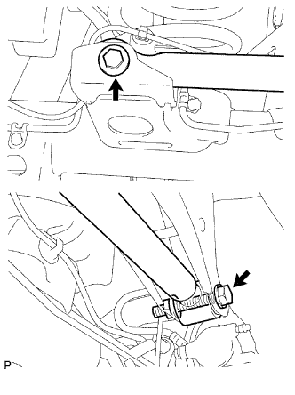

ПОПЕРЕЧНАЯ ТЯГА ЗАДНЕЙ ПОДВЕСКИ > УСТАНОВКА |
| 1. ВРЕМЕННО ЗАКРЕПИТЕ ПОПЕРЕЧНУЮ ТЯГУ ЗАДНЕЙ ПОДВЕСКИ В СБОРЕ |
Предварительно закрепите поперечную тягу в сборе с помощью болта и гайки.
Временно вверните болт.
| 2. ДОБЕЙТЕСЬ УСТОЙЧИВОСТИ ПОДВЕСКИ |
Опустите автомобиль.
Стабилизируйте подвеску, несколько раз покачав автомобиль вверх-вниз.
| 3. ЗАТЯНИТЕ ПОПЕРЕЧНУЮ ТЯГУ ЗАДНЕЙ ПОДВЕСКИ В СБОРЕ |
|  |
Затяните 2 болта.